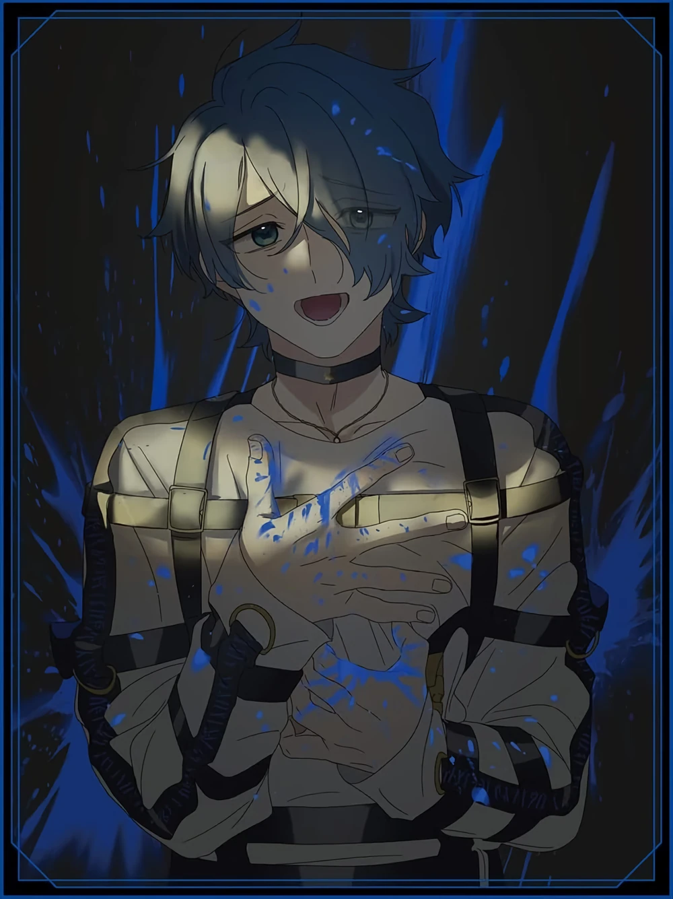
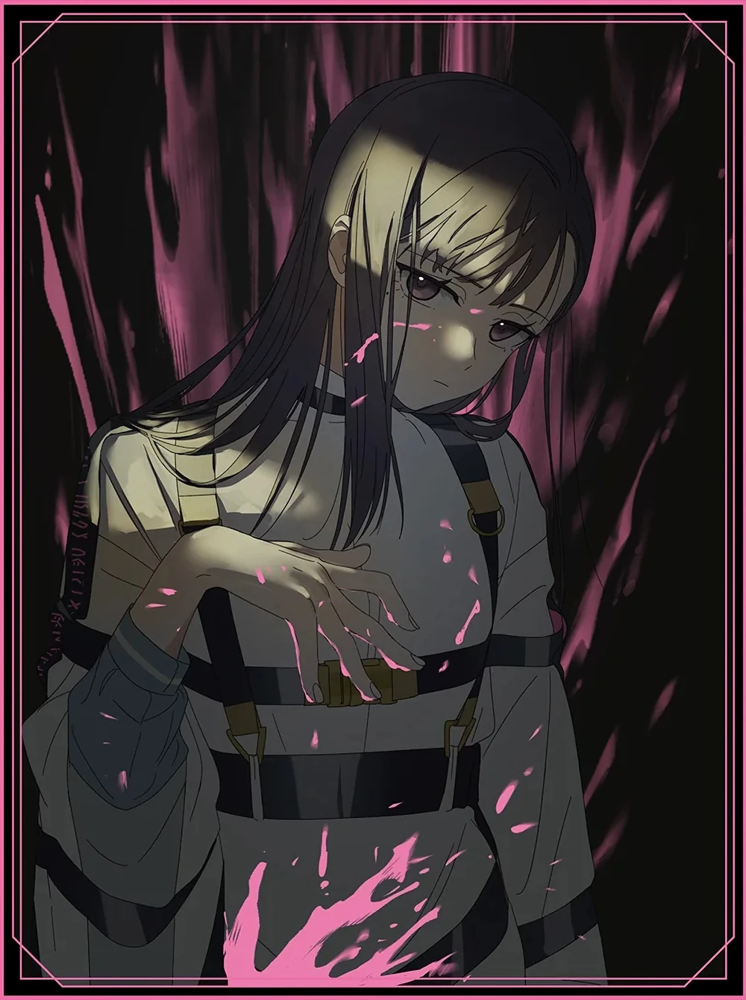
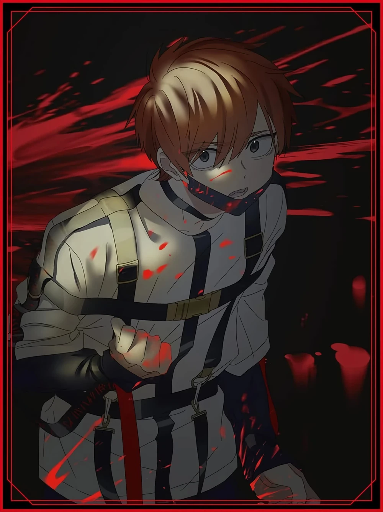
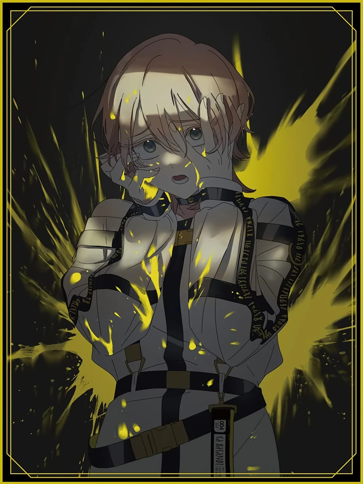
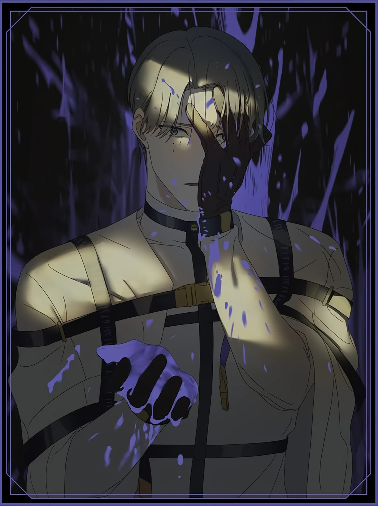
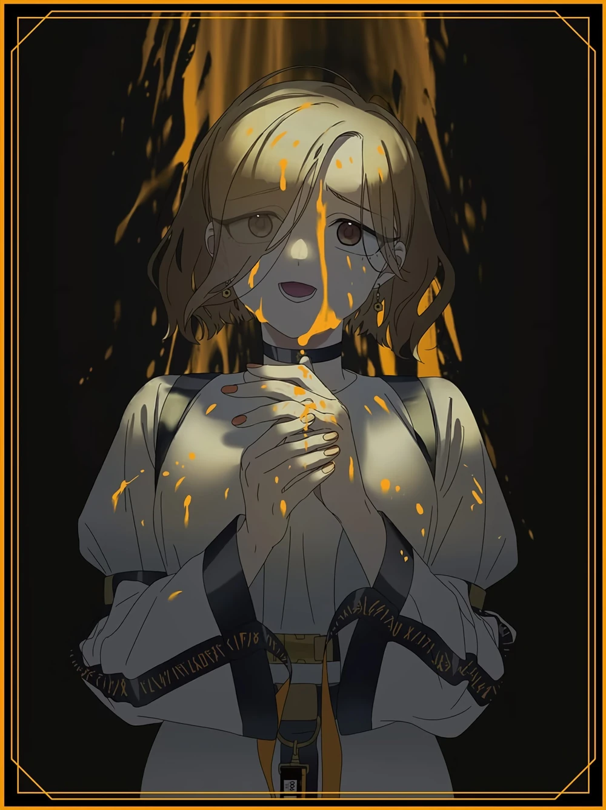
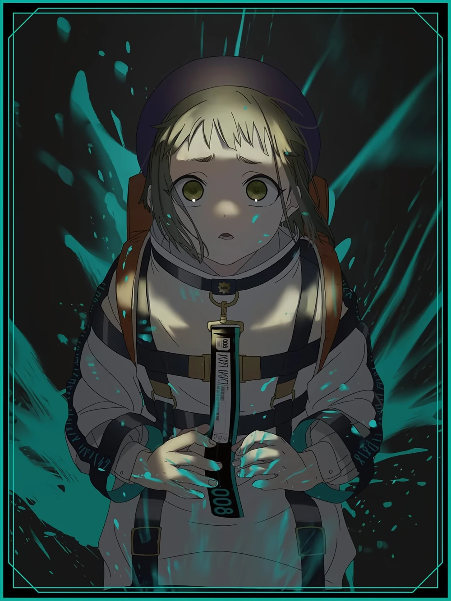
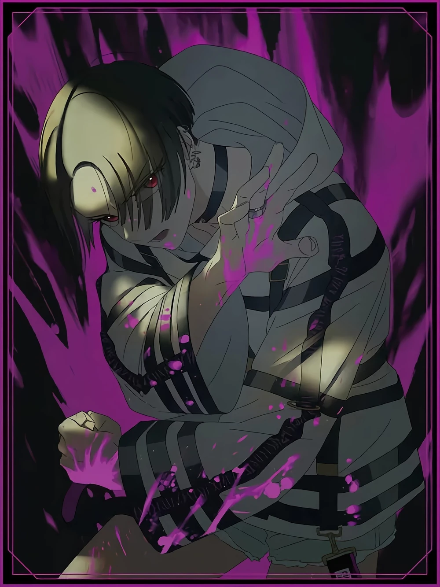

[ PRISON DATABASE ]
THE PRISONERS
Before we can judge them, we must first know who we are judging. Ten prisoners have been confined within MILGRAM, each carrying a different story and a different crime. At the beginning, however, there was very little we could actually understand about them. Their identities, personalities, and circumstances had to be pieced together from the information given to us. Some appeared easy to understand. Others were anything but. This section introduces each prisoner and gathers the information revealed about them throughout their time in MILGRAM. Their backgrounds, personalities, relationships, and actions may provide important context when examining their crimes and the choices they made. Every prisoner has a story. The question is whether that story changes our judgment.

HARUKA SAKURAI
Haruka is a shy and timid boy who seems to seek motherly love and acceptance from others. Haruka has been born with a disability hence why people, even his own mother, tend to avoid him. His mother's resentment from Haruka both comes from Haruka's disability and gender for she was expecting a girl, hence why Haruka, despite being a boy, has a name of a girl. His mother puts more effort and attention to other kids, except for her own. But Haruka knows how to capture his mother's attention.
ACCESS FILE → 002
YUNO KASHIKI
Yuno is a sweet girl and is popular due to her pretty face that captivates not only boys her age, but also men older than her which she takes advantage of. She loves having a lot of sugar daddies instead of dating men her age. People tend to ask why she does it, is it because of poverty? or just pure enjoyment of using others?
ACCESS FILE → 003
FUUTA KAJIYAMA
Fuuta is a hot-headed person who expose people he thinks deserves to be punished and humiliated because of their poor actions in the name of justice. He is popular in social media due to his heroic acts. But is it really heroic?
ACCESS FILE → 004
MUU KUSONOKI
Muu is a foreign who everyone adores yet despite that, she became a victim of bullying. She used to have people she used to call friends who now makes her school life insufferable. She feels like everyone just turned her back on her when she did nothing wrong. Is it really her fault?
ACCESS FILE → 005
SHIDOU KIRISAKI
Shidou is a physician who specializes in organ transplants. He often carries the guilt of interacting with his brain-dead patient's family to ask permission for their loved one's organs. Although heartbroken, Shidou believes this is necessary to save the lives of others who are in need.
ACCESS FILE → 006
MAHIRU SHIINA
A very caring and caring care who would do everything for love. Mahiru is a hopeless romantic who thinks love can cure everything in this world; that no matter what happens, love will prevail.
ACCESS FILE → 007
KAZUI MUKUHARA
A mysterious man who claims that life has no meaning and later on revealed that everything is a lie. An actor who keeps performing for his audience; when will his mask fall off and leave his audience in shock with the truth?
ACCESS FILE → 008
AMANE MOMOSE
A cute and obedient child to her parents and religion. Amane believes in her religion, or rather, her cult more than any law because her religion is the most divine of all and has helped her a lot despite having setbacks. If it's necessary for her religion, she would take every hit. What a wonderful devotion.
ACCESS FILE → 009
MIKOTO KAYANO
Mikoto is very hardworking as he always take over time in his job. He used to love his job until it's slowly draining him, it's as if what he works for is never enough. He doesn't know why he's in Milgram for he has no memories of any crimes.
ACCESS FILE → 010
KOTOKO YUZURIHA
Kotoko is an underground killer who gives judgement to those who have the power to manipulate the judgement system of the country. She believes that she's bringing justice to those who have tasted injustice of the country because of corruption.
ACCESS FILE →